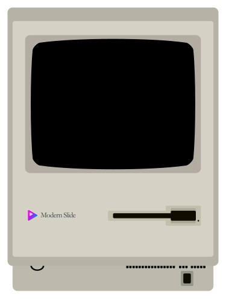

Macintosh Emulator
I have a passion for presenting, and I thought it would be fun to revisit one of the earliest Mac experiences I had with presentations. I found this emulator online and paired it with a graphic originally used by a colleague from the now‑retired “Modern Slide” site. The site may be gone, but the image lives on. Enjoy!

Loading emulator…